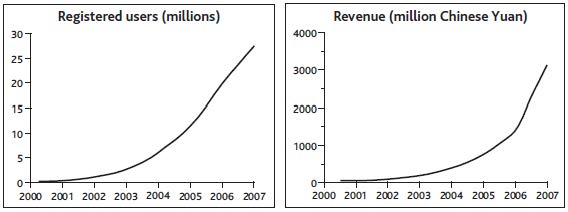

The biggest challenge facing business leaders is to understand and drive performance into the future while improving long-term profits. Executives in nonprofit organizations have performance aims too, though they may not be financial. To tackle this challenge, leaders need good answers to three basic questions: why the business’s performance is following its current path, where current policies and strategy will lead, and how the future can be altered for the better.
This chapter will do the following:
Your organization’s history is fundamental to its future. What you can achieve tomorrow depends on what you have today, and what you have today is the total of everything you have built up, and held on to, in the past. This is true even for new ventures when the entrepreneur brings experience, credibility, and contacts to bear on creating the new business.
It also holds true for nonprofit activities: voluntary groups, government services, and nongovernmental organizations (NGOs). They too can only achieve what is possible with their current resources, and if more resources are needed then existing ones must be used to get them. A charity will not appeal to many new donors, for example, unless it has built a reputation.
When the causes of performance through time are not understood, organizations make poor choices about their future. They embark on plans they cannot achieve and fail to assemble what they need in order to achieve even those plans that might be feasible. The catalog of failed initiatives, in every sector and through all time, would make a thick book indeed. These failures are costly not only in money but also in terms of wasted and damaged human potential. The better news is that organizations are often capable of far more than they imagine, if only they choose objectives well and piece together the necessary elements.
Improving an organization’s performance is not just a matter for top management. Given the right tools, everyone with influence over the way in which any part of their enterprise functions can make a difference. Challenges may be focused on an individual department or span the whole organization; they may range from very small to truly huge; and they may call for urgent measures or a long-term approach. This book focuses on the content of strategyA method for guiding management's choices about where to compete—which customers to serve, with what products and services, and how to deliver those products to customers effectively and profitably.—what the strategy actually is—in contrast to the equally important issues of the process by which strategy happens in organizations (Mintzberg, Lampel, Quinn, & Ghoshal, 1997).
The following cases illustrate organization-wide challenges with long-term implications but short-term imperatives for action. The scale of each issue is important, and the cases highlight the time path over which strategic challenges evolve and resources develop or decline. Ensuring that these changes play out at the right speed is vital.
The starting point for the approach that we will develop in later chapters is shown in Figure 1.1 "Alibaba.com Growth and Alternative Futures".
These time charts display three important characteristics:
Figure 1.1 Alibaba.com Growth and Alternative Futures
We are used to thinking of the goliaths of the Internet age, such as Google, Amazon, and eBay, as unassailable leaders in their fields, but Chinese upstart Alibaba.com showed that eBay, for one, could be beaten to a massive opportunity, given a careful focus.
From the most humble resources—just $60,000 in capital and 18 poorly paid colleagues—the founder, Jack Ma, laid out a vision for what Alibaba could become. Although highly speculative, the vision was sufficiently promising to attract venture funding and some big-name advisers to his board.
The business focused on helping smaller Chinese firms that wanted to grow business globally but found existing options to be too expensive. The key proposition was to connect such companies to similarly small and midsized buyers around the world. In spite of the apparent potential and easier access to larger firms, Alibaba maintained this focus on small and medium-size enterprises (SMEs). It also stuck to offering the simple service of connecting buyers and sellers rather than getting involved in other complementary activities.
A critical issue right at the start was to get sellers and buyers to sign up. Not only did this mean offering the core service at no charge but also dealing with the fear of technology among this segment of target users by making the Web site ultrasimple to use. In 2000, the company started selling advertising space and research reports on its sellers, but revenues were still tiny, at just $1 million, and no profits were being made.
In 2001, Alibaba started charging for its services, though still at a low rate of $3,000 per year. However, by this time the service’s visibility and reputation were so strong that membership kept on climbing, passing the 1 million mark in 2002.
From this focused start, the company was able to extend its activities in several directions, first establishing a within-China service in the local language and then making a major thrust to develop business-to-consumer (B2C) and consumer-to-consumer (C2C) services. By 2007 the group was serving 24 million users and had effectively sealed victory over eBay, which exited the market.
These three features ensure that the charts provide a clear view of the challenge, and allow further details to be added later. This particular example happens to focus directly on a critical resource—registered users—and clarifies the absolute numbers: much more useful than derived ratios such as market share or abstract notions such as competitive advantage. Often, management’s concern will be directed at the financial consequences—in other words, revenues and profits.
Understanding the history of decisions that have already been made is essential, as they are driving the business’s trajectory into the future. Past additions to the services offered and to the customer groups targeted brought the business to its state in 2007. Success or failure in the company’s future choices on these and other issues will determine its trajectory forward from that point in time.
Figure 1.2 "Alternative Futures for Blockbuster Inc." shows preferred and feared futures for Blockbuster. Even with the best fortune and skilled management, the company will do well to sustain revenues and remain profitable, and it is hard to see how it might avoid closing more stores. Services such as Netflix are not the only threat—by 2008, increases in communications speed and data processing power were finally making the fully online delivery of movies and other content a practical reality. This threatened a still faster decline in store-based rental income. Note, by the way, that for Blockbuster to engage in online delivery of movies does not remove the challenge that this innovation creates for its stores and postal business. Even if it were successful in that initiative, someone would still have the challenge of managing the declining revenue from renting physical DVDs and finding ways to keep it profitable. Any profits from online delivery would be in addition to what is shown in Figure 1.2 "Alternative Futures for Blockbuster Inc.".
Figure 1.2 Alternative Futures for Blockbuster Inc.

Not all strategic challenges are so happily able to focus on sustaining spectacular growth in business activity and financial rewards. Other cases pose substantial threats, where the best that strategic management may be able to achieve is to resist decline or even closure.
Blockbuster Inc., from its startup and early growth in the late 1980s, effectively defined and dominated the market for renting movies to watch at home. Up to 1995, sales and profits climbed ever upward, driven by aggressive expansion of the company’s store network, both owned and franchised, voracious acquisition of smaller chains, and entry into many new country markets. From 1995, it proved hard to sustain profitability, and by 2000 pressures on revenues and profits escalated sharply with the launch of Netflix.com, a service that allowed consumers to order movies on the Internet for postal delivery and return. With the new convenience this offered consumers, and without the costly burden of store real estate and staff, Netflix was able to offer very attractive prices and soon started to steal consumers from Blockbuster.
Soon other providers such as Amazon offered a similar service, and Blockbuster found itself fighting for its life. It had no choice but to offer a comparable postal service, adding to the erosion of store revenues in spite of the company’s best efforts to make a positive advantage of the combined channels. As revenues suffered, marginal stores began to lose money, and closures became inevitable.
Given that the problem of managing performance through time is universal, it is astonishing that time charts like those in our exhibits are almost completely absent from business books and management literature. Try looking for yourself next time you find yourself in a business bookstore. So what tools do managers actually use to help them decide what to do?
A regular survey by one of the large strategy consulting firms identifies a long list of management tools (Bain & Company, 2007). However, few of these have won much confidence among managers, with the result that they come and go in popularity like fashions in clothing. The tools fall into several categories:
A wide-ranging study by another consulting company, McKinsey (Coyne & Subramaniam, 2000), found that there were few strategy tools with sound methodological foundations beyond the industry forces and value-chain approaches set out by Michael Porter in the early 1980s (Porter, 1980). The many qualitative methods available seemed to work well only in the hands of their developers and were limited in their ability to provide robust, fact-based analysis.
To understand the potential value of a sound approach to managing performance through time, it is useful to start by identifying the problems with current approaches to strategy.
Assessing an organization’s strengths, weaknesses, opportunities, and threats (SWOTA method of analyzing an organization's strengths, weaknesses, opportunities, and threats in order to evaluate the organization's strategy and formulate an appropriate action plan. ) is a method widely used by managers to evaluate their strategy. Unfortunately, it offers little help in answering the quantitative questions illustrated in Figure 1.1 "Alibaba.com Growth and Alternative Futures" and Figure 1.2 "Alternative Futures for Blockbuster Inc.". Typically, the concepts are ambiguous, qualitative, and fact-free. Discovering that we have the strength of great products and an opportunity for strong market growth offers us no help whatsoever in deciding what to do, when, and how much to bring about what rate of likely growth in profits.
Opportunities and threats are features of the external environment; as such, they are better dealt with by considering industry forces and political, economic, social, and technological (PEST) analysisAn analysis of an organization's opportunities and threats by considering industry forces and political, economic, social, and technological factors. (see Chapter 4 "Handling Interdependence Between Resources"). Strengths and weaknesses, on the other hand, center on the firm itself, so they are related to the resource-based view (RBV)An analysis of an organization's strengths and weaknesses by considering more intangible resources and the capabilities of the organization. of strategic management.
RBV writers generally devote attention to more intangible resources and the capabilities of organizations on the assumption that tangible factors are easy for competitors to copy and therefore cannot provide the basis for competitive advantage (Barney, 2006; Collis & Montgomery, 1994). Later chapters will show, however, that performance cannot be explained or improved without a strong understanding of how simple resources behave, both alone and in combination, and how they are controlled. Our two examples already illustrate common types of tangible and intangible factors that may need to be taken into account (Table 1.1 "Examples of Resources in Alibaba.com and Blockbuster Inc.").
The analysis of competitive conditions within an industry has dominated efforts to understand and develop firm performance. In summary, this approach says the following:
Table 1.1 Examples of Resources in Alibaba.com and Blockbuster Inc.
| Alibaba.com | Blockbuster Inc. |
|---|---|
| Buyers | Customers |
| Sellers | Stores |
| Range of Services | Range of DVDs |
| Web Site Pages | Franchises |
| Reputation Among Users | Reputation Among Consumers |
These five forcesAn analysis of five elements—buyers, suppliers, rivals, new entrants, and substitutes—in order to assess an industry's ability to sustain profitability through time.—buyers, suppliers, rivals, new entrants, and substitutes—thus explain something of industries’ ability to sustain profitability through time.
The impact of Netflix on Blockbuster is a classic example of the five forces at work, made possible by the increasing availability and usage of the Internet. The arrival of Netflix allowed consumers to switch to its lower price service from Blockbuster.
In other markets too, e-businesses can offer valuable products at very low cost by eliminating substantial costs associated with conventional supply chains, resulting in attractive profit margins. Buyers face few switching costs in taking up these alternatives. By getting very big very fast, the new providers establish buying power over their own suppliers and erect barriers against would-be rivals. The established suppliers are the substitutes, whose brick-and-mortar assets weigh them down and prevent them from competing in the new business model.
Unfortunately, the five forces framework also describes quite neatly why most such initiatives are doomed. Buyers who are able to switch to the new offering face very low barriers to switching among the host of hopeful new providers, and do so for the slightest financial incentive. The new business modelA plan put into action by an organization to create revenue and generate profits. is often transparent, requiring little investment in assets, so rivals and new entrants can quickly copy the offering. Worst of all, many enterprises see the same opportunity for the same high returns from the same business models, so there is a rush of new entrants. Anticipating hefty future profits, many give away more than the margin they ever expected to make, in the hope that, as the last survivor, they will be able to recapture margin in later years.
We saw the five forces at work again in the fiasco of the subprime lending boom of 2003–2007 that brought the world’s banking system to its knees. Someone spotted the opportunity to lend money for home purchases to people whose income levels or credit ratings were low. A fraction of these borrowers would likely default on these mortgages, but that was OK because the much higher interest that was charged to these borrowers would give sufficient income to cover those losses and more.
There was no way to keep this new business opportunity a secret, and nothing about it was hard for bank after bank to copy. New entrants to the market intensified competition, but in this case rivalry took the form not of lower prices but acceptance of increasingly risky customers. Ultimately, the total rate of defaults experienced by the subprime mortgage providers was not sufficiently covered by the high interest rates charged, and profitability collapsed. This whole sorry episode was made worse by banks’ packaging up of these toxic debts and selling them on to other institutions that did not appreciate the true risk, but fundamentally the whole edifice was built on appallingly bad strategic management.
At first glance, the industry forces viewA passive view of industry analysis that asserts that industries with powerful pressure from the five forces are less profitable where the forces are weaker. makes a lot of sense, and there is indeed some tendency for industries with powerful pressure from these five forces to be less profitable than others where the forces are weaker. The implication is somewhat fatalistic: If industry conditions dominate your likely performance, then once you have chosen your industry, your destiny is fixed. However, research has found that industry conditions explain only a small fraction of profitability differences between firms (McGahan & Porter, 1997). It turns out that factors to do with the business itself are far more important drivers of performance.
Management does matter: You can be successful in intensely competitive industries or unsuccessful in attractive industries. Moreover, the passive industry forces view takes no account of a firm’s ability to create the industry conditions that it wants. In essence, the world is the way it is today because Microsoft, Wal-Mart, Ryanair, and many other firms have made it like this, not because market growth and industry conditions have been handed down from on high.
The competitive forces viewIndustry analysis that focuses on the importance of barriers that prevent industry participants from entering, switching, exiting, and making other strategic moves. places great importance on the concept of barriers that prevent industry participants (the competitors themselves plus customers, suppliers, and others) from entering, switching, exiting, and making other strategic moves. This implies that these barriers are absolute obstacles: If you can clear them, you are “in”; if not, you are “out.” But business life is not like that. Many industries include small firms operating quite nicely with only a little of the necessary resources, while larger firms operate from a more substantial resource base. In fact, barriers to entry do not seem like barriers at all; they are more like hills. If you are a little way up these hills, you can participate to some degree, and the further up you are, the more strongly you can compete.
So why are strategy tools so weak at answering the basic question of what is driving performance through time? It turns out that most strategy research is based on analyzing possible explanations for profitability measures, such as return on sales or return on assets. Recently, more sophisticated and appropriate measures have been used, such as returns based on economic profitProfit minus the cost of capital required to deliver that profit. (profit minus the cost of capital required to deliver that profit). Typically, data are collected for large samples of firms and plausible explanations for performance differences among the sample are tested using statistical regression methods.
Such studies generate an estimate of how much of the variation in the profitability of different firms is explained by the suggested causes. These may be external factors such as competitive intensity, or internal factors such as technology or staff training. Unfortunately, today’s profitability ratios are a very poor guide to future earnings and of little interest to investors. Would you, for example, prefer to have $1,000 invested in a firm making 20% margins but with declining revenue or in another firm making 15% but doubling in size every year?
The last main criticism that can be leveled against existing strategy methods is that they have little to offer the large number of managers who run organizations that are not primarily concerned with making profits. Public services in many economies have been made quasi-commercial in recent years through privatization, outsourcing, and other structural changes. Nevertheless, substantial fractions of all developed economies are still accounted for by public services. Charities, NGOs, security services, and other organizations also have objectives to pursue and resources with which to pursue them.
Current strategy methods are of little help to such organizations, being almost exclusively built on economic analysis of competitive markets. Yet there is a remarkable similarity between the challenges faced by managers in business and nonbusiness settings (Figure 1.3 "Performance Questions in Commercial and Noncommercial Settings"). In all cases, they are expected to have sound answers to three key questions:
Figure 1.3 Performance Questions in Commercial and Noncommercial Settings

An example of the failure of conventional industry analysis—and a testament to the success of a resource-based approach pursued over time—is provided by Ryanair. This low-cost airline operates a business model similar to that of Southwest Airlines in the United States. Its success came at a time when the global airline industry faced increased costs combined with static or declining passenger numbers. There was sympathy for the comment from Richard Branson of Virgin that “the safest way to become a millionaire is to start as a billionaire and invest in the airline industry.”
Ryanair, like Southwest before it, and easyJet, another budget European operator, challenged the industry situation when it started offering short-haul flights from Ireland’s Dublin airport in 1995. The airline focused on creating an ultraefficient operating system, allowing fares way below existing levels in the market and maintaining high levels of customer satisfaction. So dramatic were the low levels of fares that awareness among the public increased rapidly.
Ryanair’s success built on the business model originally developed by Southwest, with one type of aircraft (Boeing 737), short-haul travel, no in-flight meals, and rapid turnaround times resulting in aircraft utilization up to 50% greater than the industry average. Ryanair took this approach further, avoiding travel agents, not issuing tickets, selling food and drink on the plane, and building sales through the Internet. These measures developed and reinforced the strategic priorities of efficiency, awareness, and customer satisfaction, and made the airline popular, distinctive, and successful in a fiercely competitive market.
In a sector where intense competitive forces have made the global industry endemically unprofitable for decades, Ryanair, easyJet, Southwest, and a few other determined players have managed to do very nicely indeed.
A simple example helps to explain how this process of understanding, predicting, and improving performance works in practice. We will start it here and develop it in later chapters.
You find yourself in charge of a restaurant in a medium-size town that gets most of its business from regular customers. You also win a few new customers from time to time, some of whom become regulars. You have had a frustrating time over the past 12 months, as Figure 1.4 "Restaurant Performance Example" shows.
As the year started, you were selling 4,000 meals per month and making profits of $18,000 per month. Business and profits increased slowly for a few months, then seemed to reach a limit, so in month 6 you carried out some marketing, hence the decrease in profits and the increase in meals sold. However, meals sold per month soon reached a new limit, so profits also plateaued. In the last months of the year, you cut your marketing spending, saving money and increasing profits sharply, but at the cost of a decrease in meals sold. This kind of account is what we mean by focusing on performance through time: We are not just concerned with static performance measures such as market share, profit margins, or return on capital.
Figure 1.4 Restaurant Performance Example

A particularly important reason for understanding performance through time is to put a value on firms. Essentially, investors hope to see a strong, increasing stream of “free cash flow”: the cash that is generated after reinvesting what is needed to deliver that growth. Free cash flowThe cash that is generated after reinvesting what is needed to deliver growth. is
Operating income + Depreciation – Tax payments + Nonoperating income – Net investments in current assets.Because investors prefer money sooner rather than later, the forecast free cash flows are discounted back to give a “present value,” whether for the firm as a whole or for an investment it intends to make. How these measures are calculated and the method of valuation are explained in detail elsewhere (Copeland, Koller, & Murrin, 2000), so from now on we will simply discuss earnings, profits, or operating income. We will assume that finance professionals can do the necessary translation into the correct financial measures.
The methods used by the finance and investment communities to assess the value of firms and their strategic initiatives are exceedingly rigorous and analytical. Regrettably, though, this rigor is applied to flawed models of how businesses function and speculative estimates of the future. It is during the forecasting stage that financial evaluations lose touch with a firm’s strategic reality. A typical approach is to estimate sales growth (on the basis of industry forecasts) and project cost ratios and profit margins (on the basis of assumptions about efficiency improvements). As we will see, there are dynamics at work within organizations that make such approaches to projecting performance highly unreliable.
A sound time path of past and future performance describing the challenge your organization is facing is an essential starting point. It highlights how the future might play out if resources and events continue to develop along their current path. Time paths are not forecasts, and there is little to be gained by trying to get them right. Rather, they describe how the future could turn out if things go well or badly.
Time paths provide clarity, helping to shed light on important and complex issues by showing where the current situation may lead and what impact may follow from specific decisions.
Here are some tips for preparing a performance time path: